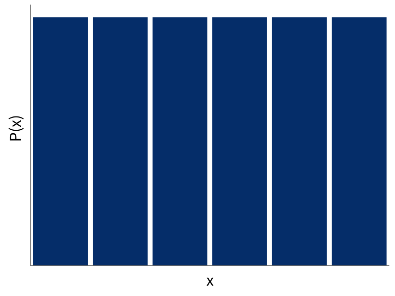

Probability Monad
Tikhon Jelvis
tikhon@jelv.is
- Probability Distributions
- Interpretations
- Supply Chain Optimization
- Probabilistic Programming
dice = uniform [1..6]

dice2 = dice + dice
Abstract Type
data Dist a = ...
dice ∷ Dist Int
dice = uniform [1..6]
coin ∷ Double → Dist Coin
coin p =
weighted [(T, p), (H, 1 - p)]
Monad
pure ∷ a → Dist a
fmap ∷ (a → b) → (Dist a → Dist b)
join ∷ Dist (Dist a) → Dist a
- remember
flatMaporbind:
x >>= f = join (fmap f x)
pure
pure x = uniform [x]

fmap
fmap (`mod` 5) dice2
join
join ∷ Dist (Dist a) → Dist a
Two different interpretations.
data Coin = H | T
coin ∷ Double → Dist Coin
coin p = weighted [(T, p), (H, 1 - p)]
fair = coin 0.5
unfair = coin 0.9
randomCoin ∷ Dist (Dist Coin)
randomCoin =
weighted [ (fair, 0.5)
, (unfair, 0.5)
]
join randomCoin ∷ Dist Coin
Sampling
randomCoin ∷ Dist (Dist Coin)
randomCoin = …
flattened ∷ Dist Coin
flattened = do
coinDist ← randomCoin
result ← coinDist
return result
Exhaustive
fair, unfair ∷ Dist Coin
fair = coin 0.5
unfair = coin 0.9


randomCoin ∷ Dist (Dist Coin)
randomCoin = weighted [ (0.5, coin 0.5)
, (0.5, coin 0.9)
]

flattened
[ (H, 0.25), (T, 0.25)
, (H, 0.05), (T, 0.45) ]
result = join randomCoin
Implementations
Sampling
pseudorandom number generators
sample ∷ Gen → (Double, Gen)
type Random a = State Gen a
run ∷ Seed → Random a → a
runIO ∷ Random a → IO a
Exhaustive
Exhaustive
type Probability = Double
-- or Rational or...
newtype Dist a = Dist
{ probabilities ∷ [(a, Probability)] }
Exhaustive
weighted ∷ [(a, Probability)] → Dist a
weighted = Dist
uniform ∷ [a] → Dist a
uniform xs = Dist (zip xs [1..])
Monad
pure ∷ a → Dist a
pure x = Dist [(x, 1)]
join ∷ Dist (Dist a) → Dist a
join dists = Dist
[ (x, p₁ * p₂) | (d, p₁) ← dists
, (x, p₂) ← d ]
Monad
Unnormalized
⇓
Normalizing
normalize ∷ Ord a ⇒ Dist a → Dist a
normalize = ...
Normalize automatically?
fmap (+) dice ∷ Dist (a → b)
(+) <$> dice <*> dice
((+) <$> dice) ∷ Dist (a → b)
Upsides
- expressive
- intuitive
- fits well into Haskell
Downsides
- sloooooow
- normalization
Simple Abstractions Scale
Supply Chain Optimization
What is Target?
- 1806 stores
- 37 distribution centers
- Target.com
Distribution Centers

Maximize Experience; Minimize Cost
Demand Uncertainty

Demand Uncertainty

class Monad m ⇒ MonadDist m where
weighted ∷ [(a, Probability)] → m a
uniform ∷ [a] → m a
binomial ∷ Double → Int → m Int
{- etc -}
instance MonadDist Dist
instance MonadDist Random
…
Models
- sampling:
- simulation
- simulation-based optimization
- exhaustive:
- linear programming
- dynamic programming
Random
easy(ish) to try different generators
newtype Random a = Random {
runRandom ∷ ∀ m. PrimMonad m
⇒ Gen (PrimState m) → m a
} deriving Functor
Markov Decision Processes
- S: set of states
- A: set of actions
- P(s, a, s'): transition probability
- R(s, s'): reward
Policy
- result of optimization
- function S → A
- maximizes expected reward
In Haskell
data MDP m s a r =
MDP { step ∷ s → a → m (r, s) }
type Policy s a = s → a
Simulation
data Markov m s r =
Markov { step ∷ s → m (s, r) }
apply ∷ MDP m s a r
→ Policy s a
→ Markov m s r
Example
step ∷ Qty → Qty → m (Qty, Money)
step inv order = do
let stocked = inv + order
cost = price * order
buyers ← demand
let after = max (stocked - buyers) 0
profit = price * (inv - after)
return (remaining, profit - cost)
Optimization Techniques
- dynamic programming (policy iteration)
- linear programming
- reinforcement learning
- features
- neural nets
- domain-specific algorithms
Free Monads

Free Monad
data D a where
Return ∷ a → D a
Bind ∷ D b → (b → D a) → D a
Primitive ∷ Sampleable d ⇒ d a → D a
Conditional ∷ (a → Prob) → D a → D a
instance Monad Dist where
return = Pure
(>>=) = Bind
Future?
- full-on probabilistic programming
- interactive Haskell-based tools
- distributions optimized for optimization?
We're Hiring!
Sounds interesting?
Email me: tikhon.jelvis@target.com